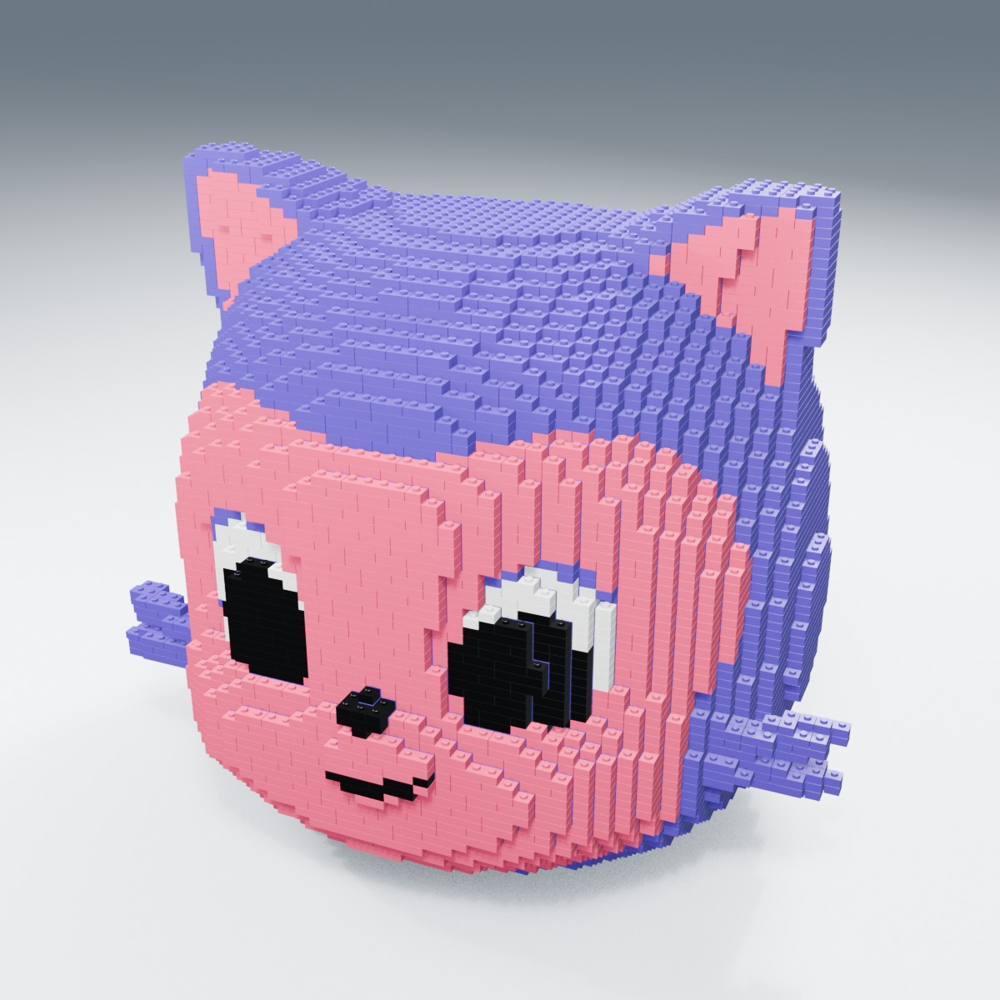
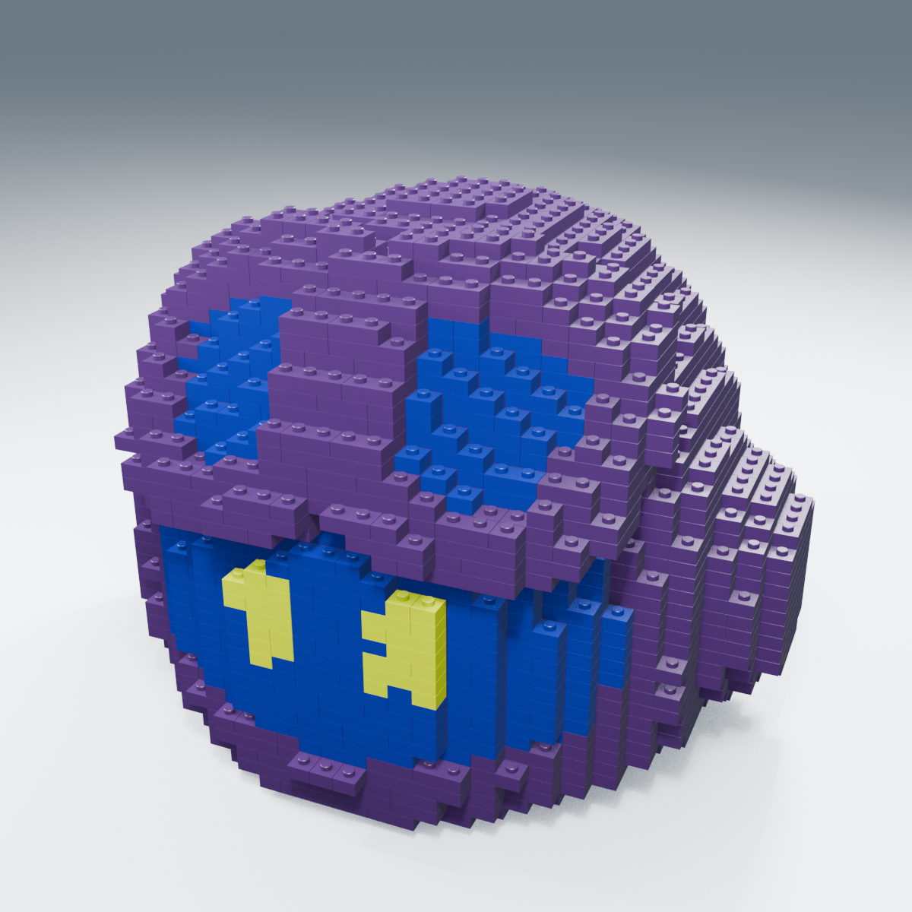
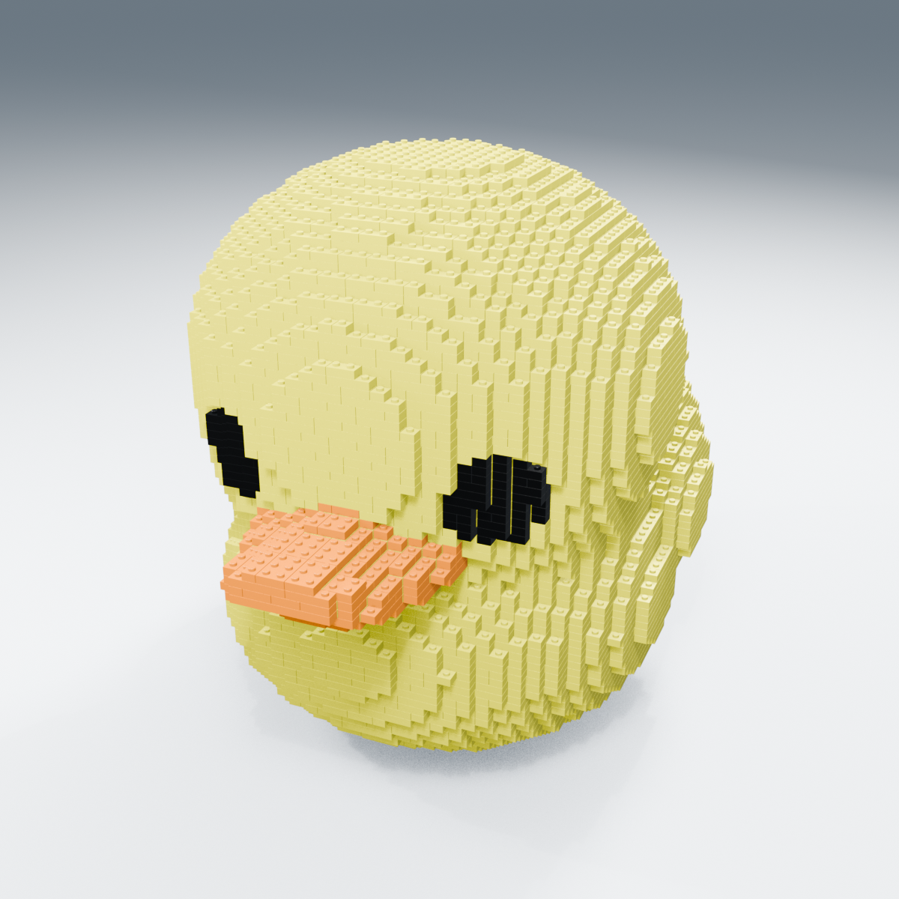

{kind=link}
MONA / 4 mm
{kind=link}

13,837 → 13,434 部品 / 180.71 mm
実CAD穴壁 1.210 mm・屋根 1.480 mm。保持力は未確認。
外観基準のみ承認済み / 接合部・組立はPROTOTYPE / 初回試作で小ささ・穴詰まりの課題あり / 全数印刷は保留。実物の記録
MonaとDuckyは細部を優先した4 mm、Copilotはブロック感と組立性を優先した8 mmです。 占有セル・表面色は維持し、少数の継ぎ目と隠れた接続を変更しました。ピクセル一致や組立の物理保証ではありません。
公開アーカイブ · 選定案の組立ビュー · 比較画像 · Phase1の9案（履歴）

13,837 → 13,434 部品 / 180.71 mm
実CAD穴壁 1.210 mm・屋根 1.480 mm。保持力は未確認。

3,135 → 3,021 部品 / 183.95 mm
実CAD穴壁 1.843 mm・屋根 2.813 mm。保持力は未確認。

10,662 → 10,311 部品 / 180.71 mm
実CAD穴壁 1.210 mm・屋根 1.480 mm。保持力は未確認。
初回4 mm試作に課題があったため改善検討中です。全体の数千～1万部品を印刷しないでください。各familyは4条件の受け4個＋共通雄キー4個＋段違い結合3個です。 4 mmの入口壁1.21 mm・屋根1.48 mmは実CADの測定値ですが、1.10 mm軸の破断・摩耗・保持力は別途UNKNOWNです。
具体的な試験方法・最少記録項目 · 記録CSV · 公称干渉・着座面の証跡
11部品 / 7種類。PLA・ノズル 0.2 mmは未スライスの試行仮定。
配置3MF · 配置STL · STEP · FreeCAD
ノッチ1/2/3/4 → 直径差 −0.05 / 0 / +0.10 / +0.20 mm。−0.05は意図的な公称干渉です。
11部品 / 7種類。PLA・ノズル 0.4 mmは未スライスの試行仮定。
配置3MF · 配置STL · STEP · FreeCAD
ノッチ1/2/3/4 → 直径差 −0.05 / 0 / +0.10 / +0.20 mm。−0.05は意図的な公称干渉です。
Monaの7つのひげ先端は、組立開始前に置く専用支持台へ上から載せます。保持力確認前に支持台を外さないでください。 支持台CAD（初回の接合部だけの試験には不要）
型ごとのSTL/STEP、必要数、各個体IDの対応を収録しています。同じ形を数万ファイルへ複製していません。 P1Sの配置は公称256×256 mmを仮定した幾何配置だけで、メーカーprofile・スライサー・印刷時間・質量・支持材は未検証です。
{kind=link}
{kind=link}